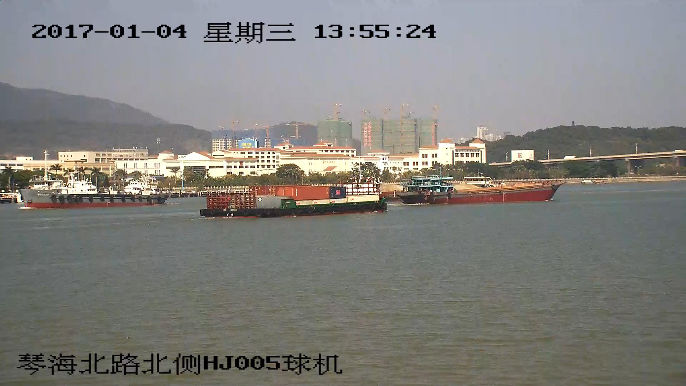
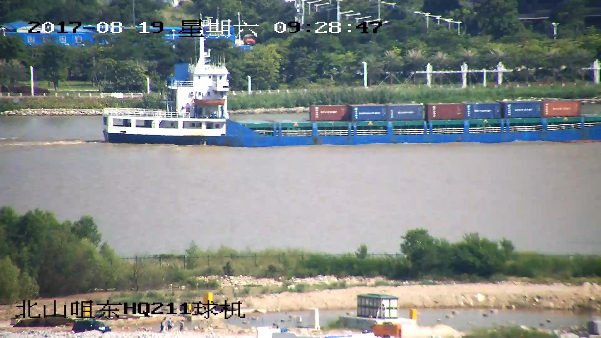
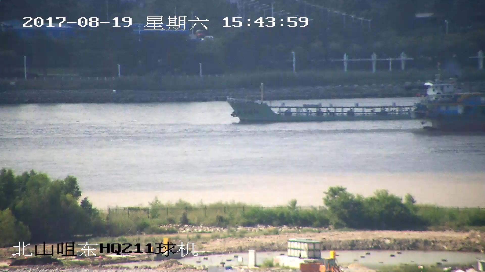
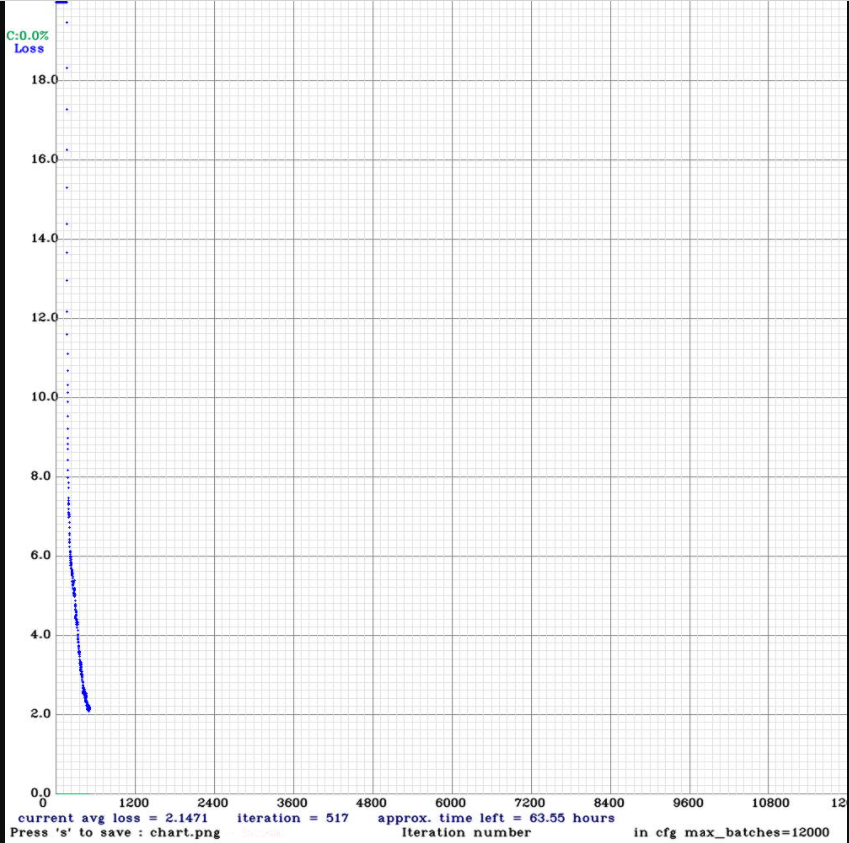
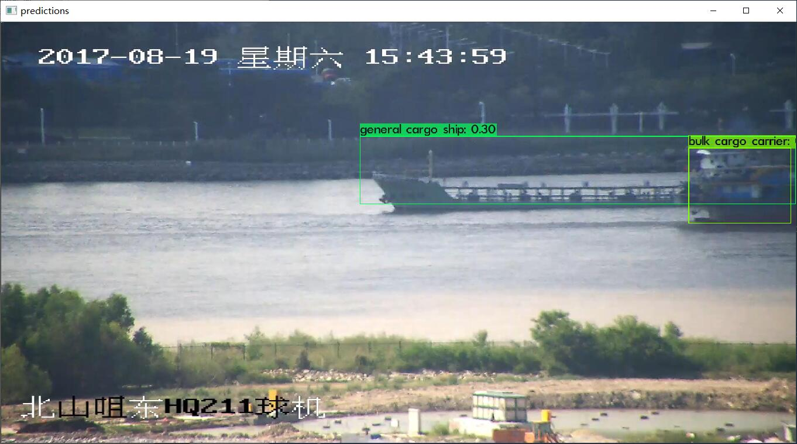
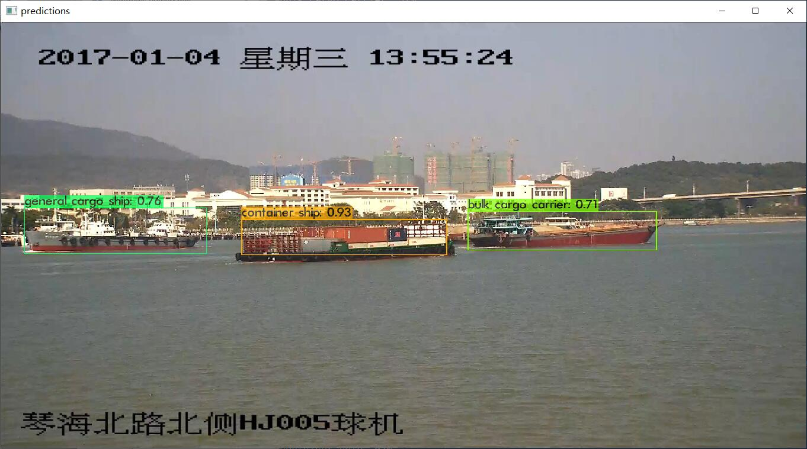
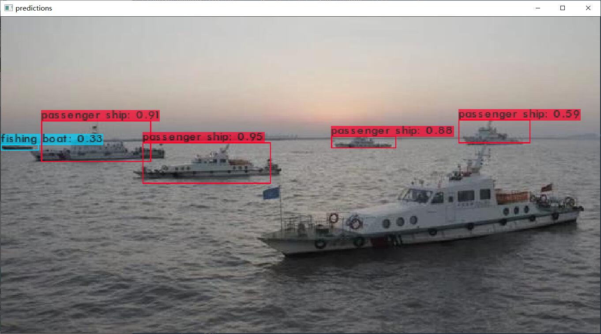
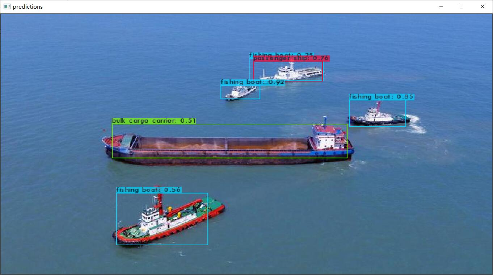
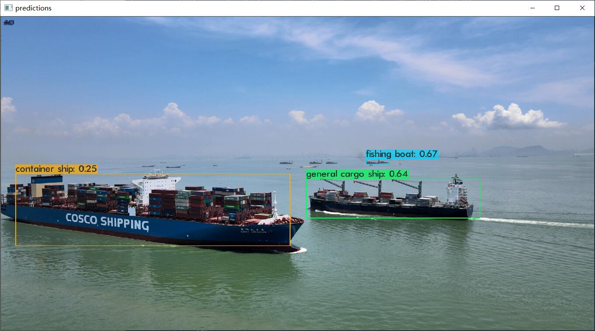

船舶目标检测:使用Darknet训练yolo模型的过程记录
船舶目标检测:使用Darknet训练yolo模型的过程记录
编译darknet
其实早就了解过yolo，但是一直没时间（也可以说没动力，没分配时间）去试一下。放假了突然就想试一下目标检测。
谷歌查到了yolo作者的网站，讲的很详细，跟着做就完事了，非常简单。
只可惜我第一步就卡住了。
根据网站的描述，第一步是下载 darknet 的源码并执行 make 编译。但我用的是Windows系统，作者给的 darknet repo 似乎没提供 Windows 上编译的过程。
于是我又去查Windows下如何编译darknet，最后找到了 AlexeyAB/darknet，提供了在Windows和Linux的编译方法。
不过 AlexeyAB/darknet 的文档让我有一点点疑惑。它提供了使用 vcpkg 编译 darknet 的方法，但是它的步骤似乎多了很多多余的步骤：
1 | PS Code\> git clone https://github.com/microsoft/vcpkg |
实际上，在 .\vcpkg install darknet[full]:x64-windows 这一步就把 darknet 编译出来了。编译出来的 darknet.exe 在 vcpkg\installed\x64-windows\tools\darknet 里。
我花了很多时间在后面的那些指令上，因为最后一步的 powershell 脚本我执行的时候总是提示找不到 CUDA 编译器。
把编译的 powershell 脚本和 CMakeLists.txt 看了又看，改了又改，都没解决问题。
所以我只好倒回到 vcpkg 的步骤，检查 installed 文件夹，查看是不是哪些依赖没装好。
就这么巧合地发现 darknet.exe 躺在 tools 文件夹里。
我用的指令是作者推荐的 vcpkg install darknet[opencv-base,cuda,cudnn]:x64-windows。但是编译出来的 darknet 居然提示没有 opencv，不能直接显示预测图片，只能把预测结果保存到硬盘再查看。
vcpkg 编译的结果不满意，我只能再编译一次。
在找错的时候，我分析出这个 powershell 脚本就做了两件事：
- 通过 VCPKG_ROOT 环境变量找到 vcpkg.exe，然后使用 vcpkg 编译依赖，并且把编译结果放到 darknet 源码的根目录（而不是 vcpkg 的 installed 文件夹）。
- 执行 cmake，其中 CMakeLists.txt 就在 darknet 源码的根目录。
所以我决定绕过这个 powershell 脚本，直接用 CMake-GUI 来编译。
这个过程的步骤很多，但都是 CMake 的一些基本操作。
很顺利地成功了，没有什么找不到 CUDA 编译器的错误。
题外话：安装完 CUDA 后，我的 Visual Studio 2019 变得非常卡！一直在等待什么扩展的加载！看了下扩展菜单，多了个 Nsight 的菜单。我想把这个扩展禁用了，但是 VS 的扩展管理器里却找不到这个扩展。
查了 VS 的社区论坛，似乎是 Nsight 的一个 BUG，但是没人提供解决方法，只是说和 VS 没关系。在 StackOverflow 里也遇到了同样的问题，一模一样，问题已经存在一个月了，但是没有任何答案。
然后我就想到控制面板把整个 Nsight 给删掉试试看，发现了一项 Nsight Integration 很可疑。试着卸载它，发现问题就这样解决了。贡献了一个 StackOverflow 回答。
尝试训练自己的模型
体验模型还是不够过瘾的，我更想试着训练出自己的模型。
我体验的模型是 PASCAL VOC 数据集的模型，都是人啊猫狗啊之类的常见对象。因为已经有了，所以这些对象我都没兴趣去训练了。
我最终决定去检测船舶，一个是这和我的专业有点关系，另一个是我找到了现成的数据集，不用自己标注了（重点）。
训练需要做的准备
AlexeyAB/darknet 的 README 文件说的非常详细，一步一步地指导应该修改什么文件。
这里我做个简单的总结：
- 修改 yolov4-custom.cfg 文件, 让它符合你的需要（这一步会设置目标检测分类的数量和神经网络的大小等参数）
- 准备好训练用的数据集，包括图片和标注文件，图片和标注文件都放在同一个文件夹里。标注文件的文件名和图片的文件名一样，只是后缀是txt。标注文件用一个矩形描述对象所在的位置。
- 准备 train.txt 里面是图片的路径，一行一个。(相对于 darknet.exe 的相对路径)
- 准备 valid.txt 里面是图片的路径，同 train.txt，这里的图片用于验证。(不是必须)
- 准备 obj.names 文件，内容是分类的名字，一行一个。
- 准备 obj.data 文件，内容包括分类的数量、train.txt和valid.txt的路径、obj.names的路径和模型备份的目录路径。
训练的数据集
训练用的数据集来自于论文 “Seaships: A large-scale precisely annotated dataset for ship detection” [1], 下载地址：SeqShips(7000).zip)。
包含六个分类：orecarrier, bulk cargo carrier, general cargo ship, container ship, fishing boat, and passenger ship。
数据集里的图片长这样：



都是来自航道监控的一些图片，很模糊。而且论文里说数据集有三万多张图，但是我只从作者的网站里下载到了 7000 张图片的数据集。
标注的格式转换
数据集用的标注格式是 PASCAL VOL 的格式，就是一个图片对应一个XML文件。XML文件包含图片的大小、目标的分类和目标所在的矩形区域(左上角的点(Xmin,Ymin)和右下角的点(Xmax,Ymax)，即xmin,ymin,xmax,ymax共四个值)。
但是使用 darknet 进行训练，就要用 darknet 的标注格式。darknet的标注格式是一张图片对应一个txt文件，txt文件一行就是一个检测目标：
1 | <object-class> <x> <y> <width> <height> |
所以要进行格式上的转换。
实际上，yolo作者的网站也是用darknet训练 PASCAL VOL 数据集，也提到了这个转换。而且yolo作者提供了这个转换的python程序。
稍微修改一下这个python程序，就能进行转换了。
训练模型
按照 AlexeyAB/darknet 的文档，大概要训练 9000 iteration 会有比较好的结果。但实际上我训练了 300 iteration 就开始测试了。
300 迭代的结果就是，什么结果都没有，没有检测的框框。太心急了！
500 迭代我又去测试，这次终于能检测到一些船舶了。但是个别数据集的图片还是没有结果。

评估模型完好程度的指标除了迭代次数，还有就是 darknet 的输出。
输出的内容里有一个指标是 IoU，它的含义是 检测的框框和标注的框框面积的交集 与 检测的框框和标注的框框面积的并集 的比值。
指标 IoU 的值介于 0~1，它越高，说明检测的结果与标注的结果越接近，一般来说 0.7 以上就是良好。
结合 AlexeyAB/darknet 文档中的图片能更好地理解 IoU，我就不浪费读者的时间了。
我的机器是一台办公笔记本，显卡是 MX150，训练速度非常慢，500 迭代大概花了三四个小时。
后来我又换 GTX 1660s 的台式机来训练，同样是三四个小时，能够达到 1300 迭代。
我的笔记本感觉要牺牲了，训练期间GPU保持在93℃。而且因为是第一次训练，经验不足，重来了几次，所以实际训练时间大概有五六个小时，这期间笔记本一直处于高温的状态，没让它休息。
感觉电池鼓包更严重了，触控板都突出来了。
预测结果展示
下面两张是训练数据集的预测结果，效果还比较理想。


下面这三张图片都是网上另外找的，不在训练数据集里：



船舶的位置确实是准确找出来了，但是分类几乎都是错的。这可能是因为迭代次数太少了，或者可能是训练数据集的图片太模糊了，船舶的特征不够明显。又或者，训练用的船都是内河船，测试用的船都是海船，外形差别有点大。
另外，这个模型对于竖着的船，很容易就检测不出来了。这可能是因为训练的数据集里的船都是横着的。
还有就是对于占图篇幅很大的船（离镜头很近），即使船舶是完整的，模型也容易识别不出来。这可能是因为数据集里的船都是离镜头很远的船，在图片里很小，训练出来的模型就不够自信了？
总结
挺好玩的，训练模型很吃配置，耗时间。
整个训练过程实际上最关键的一步是找到标注好的数据集，我自己是没有能力标注出那么多的图片的，很好地体会了 “人工智能时代，信息数据就是资源” 这句话。
参考文献
[1] Shao, Zhenfeng, et al. “Seaships: A large-scale precisely annotated dataset for ship detection.” IEEE transactions on multimedia 20.10 (2018): 2593-2604.
船舶目标检测:使用Darknet训练yolo模型的过程记录
https://uint128.com/2021/02/13/船舶目标检测-使用Darknet训练yolo模型的过程记录/